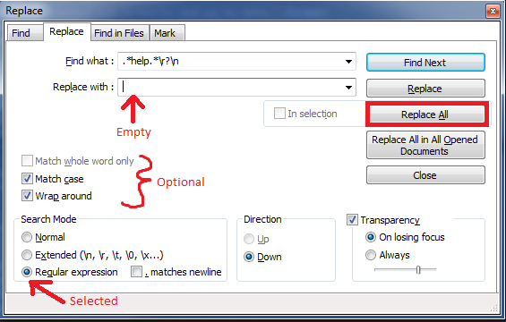

Regex: Remove lines containing "help", etc
I have a long document of commands. Using Notepad++ or regex, I want to delete all lines containing "help" including keyboard_help, etc.
How can this be done?
Answer
This is also possible with Notepad++:
- Go to the search menu,
Ctrl+F, and open the Mark tab. -
Check Bookmark line (if there is no Mark tab update to the current version).
-
Enter your search term and click Mark All
- All lines containing the search term are bookmarked.
- Now go to the menu Search → Bookmark → Remove Bookmarked lines
-
Done.
Suggest
Another way to do this in Notepad++ is all in the Find/Replace dialog and with regex:
-
Ctrl+hto bring up the find replace dialog. -
In the
Find what:text box include your regex:.*help.*\r?\n(where the\ris optional in case the file doesn't have Windows line endings). -
Leave the
Replace with:text box empty. -
Make sure the Regular expression radio button in the Search Mode area is selected. Then click
Replace Alland voila! All lines containing your search termhelphave been removed.
